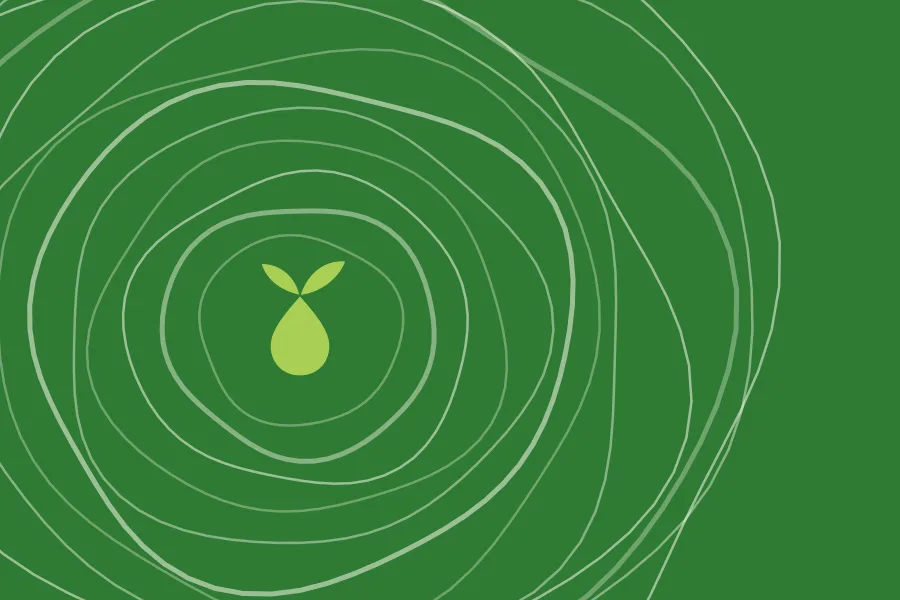
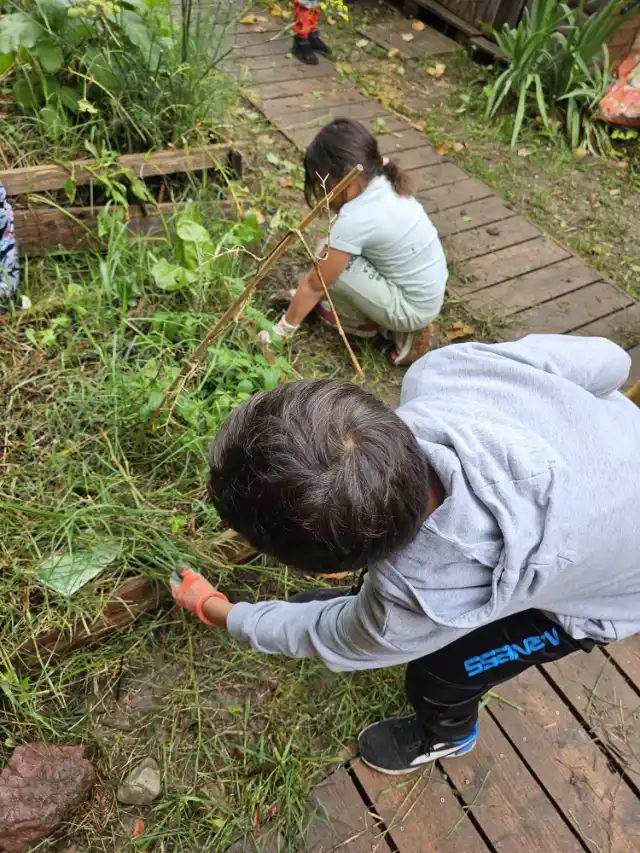
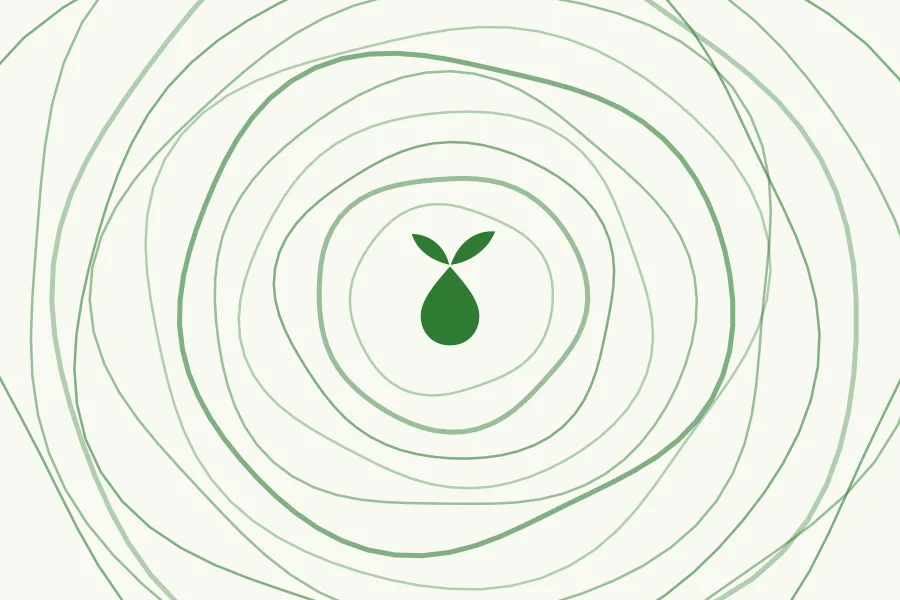
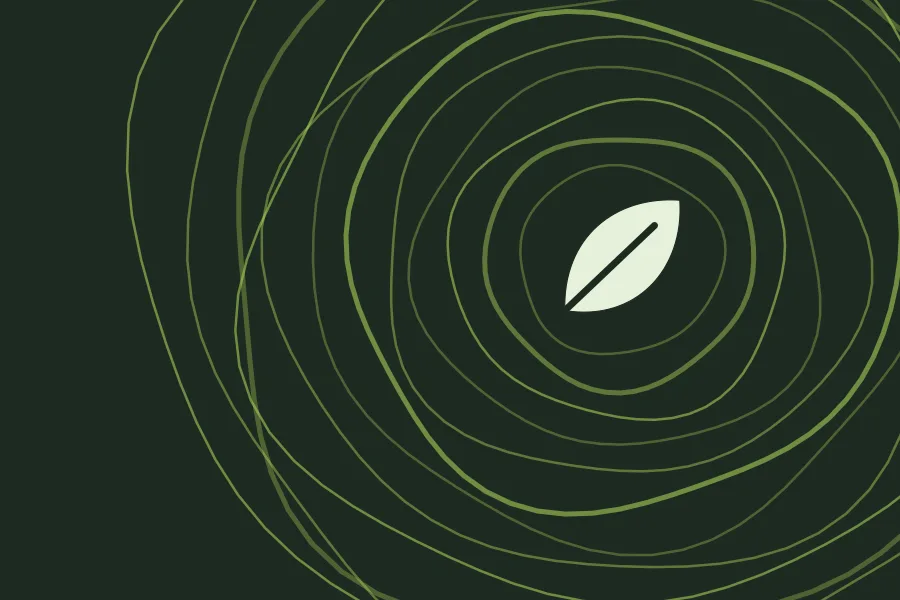
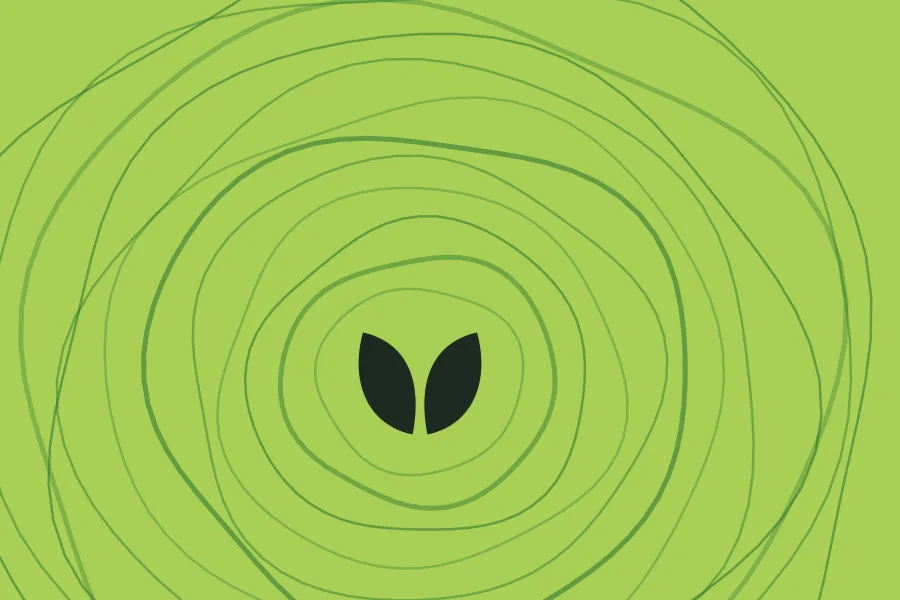
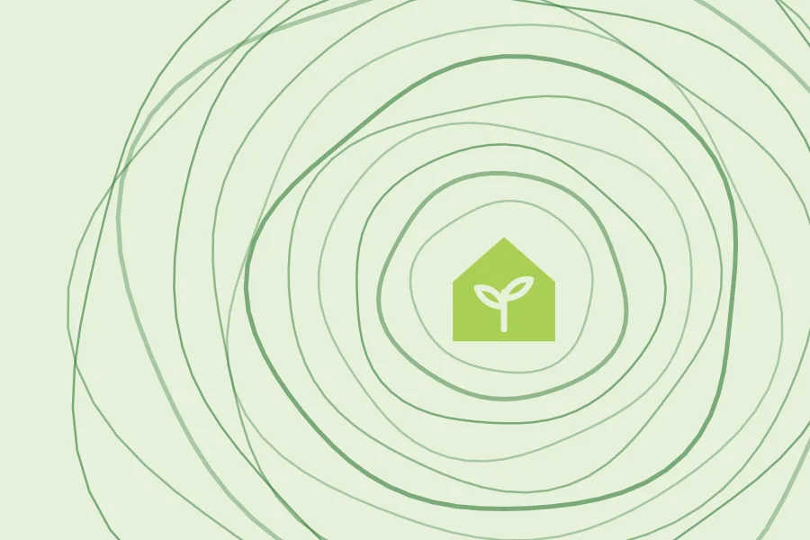

Comprendre
Ateliers de sensibilisation
Des temps d'échange et de pratique pour comprendre les enjeux environnementaux et de développement durable.
Sensibiliser, expérimenter, agir
L'Avenir Durable sensibilise et mobilise le public aux enjeux environnementaux et de développement durable, avec des ateliers, des activités et des actions concrètes.

Le projet
Les grands enjeux environnementaux se jouent aussi dans les petits gestes de tous les jours.

Un programme complet pour passer de la prise de conscience à l'action.
L'Avenir Durable est un projet qui vise à sensibiliser et à mobiliser le public aux enjeux environnementaux et de développement durable. Il propose des ateliers, des activités et des actions concrètes.
Son objectif : favoriser l'adoption de comportements écoresponsables dans la vie quotidienne. Les thématiques abordées couvrent un large éventail de sujets liés à la préservation de la planète.
Nos actions
Des formats complémentaires, du déclic à l'habitude.

Des temps d'échange et de pratique pour comprendre les enjeux environnementaux et de développement durable.

Observer, manipuler, expérimenter : des activités pour apprendre en faisant.

Passer de l'intention à l'action, ensemble, sur le terrain.

Faire des comportements écoresponsables de vraies habitudes, à la maison comme ailleurs.
Questions fréquentes
Un projet qui vise à sensibiliser et à mobiliser le public aux enjeux environnementaux et de développement durable. Il propose un programme complet d'ateliers, d'activités et d'actions concrètes pour favoriser l'adoption de comportements écoresponsables dans la vie quotidienne.
Les thématiques couvrent un large éventail de sujets liés à la préservation de la planète et au développement durable, toujours reliés à des gestes concrets du quotidien.
Écrivez-nous à avenirdurable@ecomail.fr en précisant votre ville et le public concerné. Nous vous indiquerons les prochaines dates et les modalités.
Présentez-nous votre projet et votre public par e-mail : nous étudierons ensemble le format le plus adapté.
Écrivez-nous en précisant vos envies et vos disponibilités, ou la nature du partenariat envisagé.
Non. Le site n'a pas de formulaire et ne dépose aucun cookie publicitaire ni de mesure d'audience. Le détail figure dans les mentions légales.
Écrivez-nous : nous construirons ensemble le format le plus adapté.
Contact
Une question, une envie de participer, une idée de partenariat ? Écrivez-nous.